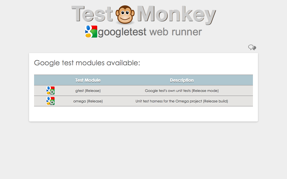
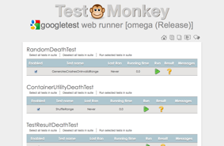
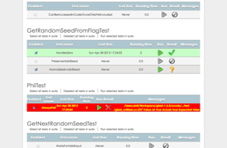

Test Monkey v1.1
Web based test runner for the Google Test framework
Overview
This software allows C++ test harness applications compiled with the google test library to be run easily, and for unit test results to be clearly displayed in a web browser.
Screen shots
|  |  |  |
{kind=link}
{kind=link}
{kind=link}
Getting started
There are two ways to run the application:
- Specify which test harness applications will be run from the command line;
- Specify a test schedule file, containing details of the test harness applications to run.
In both cases, when Test Monkey starts, point your web browser at http://localhost:8080 (or a different port if specified) to use the application. Pressing ctrl-c will then stop the embedded web server and shut the application down.
Note the google test harness executables under test can be updated while the web server is running.
Specifying test executables
To run the application use:
java -jar testmonkey-1.1.jar path/unit_test_harness1.exe path/unit_test_harness2.exe [Port=Portnum]
where Port is an optional parameter, and specifies the port the embedded web server will listen on.
Using a Test Schedule file
To run the application use:
java -jar testmonkey-1.1.jar schedule=tests.xml [Variable=Value] [Port=Portnum]
where tests.xml is the path to a test schedule xml file that validates against this schema, and as above Port specifies the web server port.
The test schedule xml file may contain a number of user defined variables of the form $(Variable). These variables are replaced at run time with the corresponding value if the variable is passed in as an optional parameter to Test Monkey. This is useful for instance to target /debug or /release build directories.
The schedule file takes the form:
<UnitTestSchedule runallfrom="...">
<UnitTestModule runfrom="..." name="..." description="..." testfilter="..." enabled="true">unit_test_harness.exe</UnitTestModule>
<UnitTestModule> ... </UnitTestModule>
</UnitTestSchedule>
- The runallfrom attribute specifies where to look for all unit_test_harness files. If specified, the runfrom attributes are ignored.
- If the runallfrom attribute is not present, the runfrom attributes specify the location of each unit_test_harness on a per-file basis. Note specifying paths with these attributes is optional and unit_test_harness can contain a path.
- The optional name attribute is the friendly name used on the test modules list page.
- The optional description attribute is the test module description used on the test modules list page.
- The mandatory testfilter attribute is not used by Test Monkey (as this schema is shared - set it to "*").
- The mandatory enabled attribute (true or false) determines whether the test module is included by Test Monkey or not.
Note the test schedule file may be updated while Test Monkey is running - any changes will be detected and the file reprocessed.
The web interface
This should be self explanatory! Click on a test module from the list to open the list of tests available (note if only one module is under test, the module list is not shown, and only tests available from that single module are displayed). Select and deselect tests you wish to run. You may select and deselect all tests, all tests in a suite, or only individual tests. Selected tests can then be executed, again either all selected tests, tests in a suite, or only individual tests.
Building the software
Test Monkey is a Java application. To build it you will need to download maven, and also get the latest jdk for your platform. I'd also recommend getting the eclipse IDE - an eclipse project is included in the repository. To get going you will need to:
- ensure the maven and java bin directories are on your path
- run "mvn package" from the testmonkey source directory to download all the dependencies to your local maven repository and build the single large testmonkey jar file in the target sub-directory.
Compatibility
The following browsers have been tested:
- Google Chrome
- Firefox 19.0.2
- Safari 6.0.3 (known issue with CSS background images sometimes disappearing)
- Internet Explorer 10 (works with minor display issues)
Internet Explorer versions prior to 10 are not supported due to Microsoft's historic lack of web standards compliance.
Phil McCarthy, April 2013